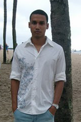

"Um pouco sobre mim, na 3ª pessoa."
Nasceu no Rio de Janeiro, capital mas já morou em outros estados como Bahia e Minas Gerais e ainda criança aprendeu a gostar de matemática, xadrez e futebol.
Na adolescência descobriu 2 paixões, o violão e o computador. Aos 18 anos em Minas Gerais se tornou instrutor de informática na mesma escola em que cursou o seu primeiro curso de computação, tomou gosto e logo foi contratado por outra empresa de informática na mesma cidade. Anos depois voltou ao Rio de Janeiro para tentar a sorte em sua cidade natal, trabalhou em vários lugares, fez alguns cursos ligados a área e trabalhou como Professor de T.I. e Web.
- Nome: Raul Sena Ferreira.
- Mora atualmente: Rio de Janeiro - RJ.
- Qualidade: Persistente.
- Defeito: Exigente demais consigo mesmo.
- Hobby: Praia, xadrez e jogos eletrônicos.
- Culinária: Portuguesa, baiana e mineira.
- Música: Eclético.
- Time: Vasco.
- Uma frase: "Só preciso de 3 coisas para ser feliz: Deus, família e bons amigos, o resto é consequência."
- Um sonho: Alcançar meus objetivos e ajudar outras pessoas a alcançarem os seus.